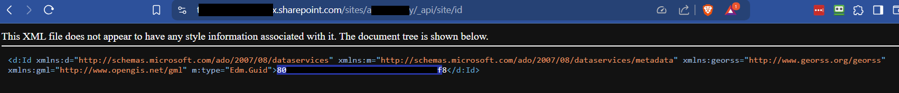
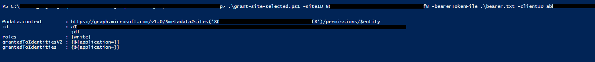

A PDF file for end-to-end Azure/Entra configuration for both SMTP and O365 CDA can be found here: Configuring Azure OAuth (PDF Download)
A PDF file for end-to-end Azure/Entra configuration for both SMTP and O365 CDA can be found here: Configuring Azure OAuth (PDF Download)
A PDF file for end-to-end Azure/Entra configuration for both SMTP and O365 CDA can be found here: Configuring Azure OAuth (PDF Download)
 This topic discusses a product feature in active development, and is subject to change at any time.
This topic discusses a product feature in active development, and is subject to change at any time.
BP Logix will provide you with a set of Powershell scripts for applying the appropriate permissions to your "Site" level App Registration. These scripts have no additional external dependency; however, prior to running them, you should run the following PowerShell cmdlet:
Set-ExecutionPolicy -ExecutionPolicy Bypass
Once executed, it should ensure that the scripts provided by BP Logix won’t be blocked from running.
Once you've done so, locate the folder into which you extracted the PowerShell scripts provided to you by BP Logix. Start PowerShell in that folder location.
First you must obtain a bearer token from the “Full Scope” App Registration you configured earlier. To obtain the bearer toke, run the PowerShell command below. For each parameter in the command, use the "Full Scope" value you obtained earlier (Full Scope Tenant ID, Full Scope Client ID, and Full Scope Client Secret).
.\get-access-token.ps1 -tenantId <Full Scope Tenant ID> -clientId <Full Scope Client ID> -clientSecret <Full Scope Client Secret>
You'll need to replace the text in angled brackets with the actual values from your "Full Scope" App Registration, e.g.:
.\get-access-token.ps1 -tenantId deadbeef-deed-feed-f00d-0123456789ab -clientId 87654321-deed-feed-f00d-0123456789ab -clientSecret dI8AQ~EKNqYwcXf0CJ_lFBJvR6xnDWOZDM4Qbao7
Once you’ve run the script successfully, you’ll have a file named "bearer.txt" in the current folder. The script will also output the bearer token to the console, though it will be truncated, due to its length.
Next you’ll need to obtain the Site ID for the SharePoint site you wish to use with Process Director. Process Director uses a specific path within the site to avoid conflicts with other files, documents, and folders that may be in use.
Using a browser of your choice, login and access the SharePoint site you wish to use.
In that same browser, without logging out of SharePoint/Entra, navigate to:
https://<tenant-name>.sharepoint.com/sites/<site-name>/_api/site/id
Once that page loads, it will display some XML values, as shown below.

In the example above, the redacted value that's outlined in blue (starts with “80” and ends with “f8”) is the Site ID. Copy this value and save it.
Now that we have the correct bearer token, and SharePoint Site ID, you'll need to use them, along with the Site Client ID, the file location of the bearer.txt file that contains the bearer token, and the Site Name for the "Site" level App Registration, to run the following PowerShell command.
.\grant-site-selected.ps1 -siteID <SharePoint Site ID> -bearerTokenFile .\bearer.txt -clientID <Site Client ID> -appName "Site"
Again, you'll need to replace the values in angled brackets above with the appropriate values from your systems. Upon successful completion of the script, you should see the appropriate output in the console, and there should be no red error text.

The console messages should indicate that the appropriate roles/permissions were granted to the specified "Site" App Registration.
With this complete, you can now securely transmit the configuration information BP Logix needs to configure your system (or, in the case of on-premise platform customers, configure your system).